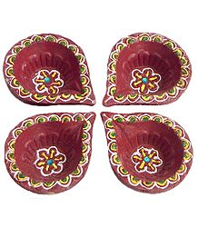
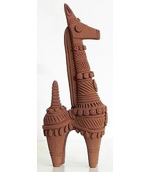
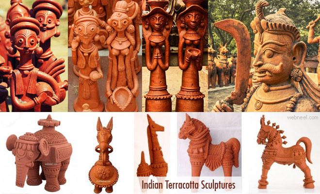
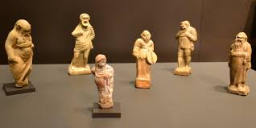
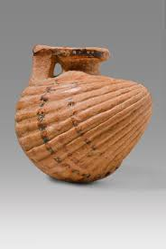
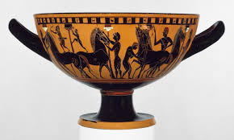
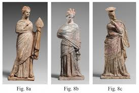

Types of
Terracotta

Terracotta Warriors
The Terracotta Warriors are life size terracotta sculptures created more than 2000 years ago to be buried with Emperor Qin Shi Huang, China's first emperor.

Bankura horse
The vibrant tradition of folk art in West Bengal’s Bankura district includes a variety of clay handicrafts .The district's most
Glazed terracotta
Glazed terracotta is a vibrant solid block that comes in the 16 regular dye colors.Glazed terracotta can be obtained by first Dyeing a
Terracotta pottery
Terracotta is the type of clay used to produce terracotta pottery on a potter’s wheel. The potter at a full tilt rotates the wheel
Terracotta sculpture
Terracotta is the term normally used for sculpture made in earthenware, and also for various practical uses including vessels

Terracotta tiles
Terracotta translates from Italian as "baked earth," and as a category of ceramic tile, it refers to tiles created from a

Terracotta architecture
Architectural terracotta refers to a fired mixture of clay and water that can be used in a non-structural, semi-structural,

Terracotta jewellary
Terracotta jewellery is the beautiful art of making amazing jewelry using natural clay. Terracotta jewellery is around many
Photos
{kind=link}
{kind=link}
{kind=link}
{kind=link}
Blog
Entries
-

Kantaji Temple
Kantaji Temple is a late-medieval Hindu temple located in the north-western part of Bangladesh.It is one the most magnificent religious edifices belonging to the 18th century.The temple belongs to the popular with the assemble of memorable
-
Bait Ur Rouf
The Baitur Rauf Jame Mosque was an intensely personal project for architect Marina Tabassum. The original commission for the project came from her grandmother Sufia Khatun, in commemoration of Tabassum’s mother
-

Terracotta Folk art
Folk art is the biggest reservoir of cultural traits and exchanges, traces of which are to be found in modern times in transformations that they’ve gone through over the centuries. For many folk art is the key to understanding a culture and its peoples. Bangladesh, a country with hundreds of
-
Mathurapur deul
Like most of the archaeological places, this one is a 17th century architect with many terracotta depicted Hindu Myth.Mathurapur Deul is situated in Mathurapur village, Modhukhali Upozila, Faridpur District. It is at 36 km west from Faridpur and 3km away from
-
Gopinath Jor Bangla
A jor-bangla temple, locally known as Gopinath Temple, is located at Kalachand Mahalla in Pabna municipality. It is one of the most significant heritage structures in Bengal. It is also a major archaeological attraction of Pabna district. Two do-chala structures
-
Terracotta Pottery
In Bangladesh pottery has a long traditional history. Pottery is an important art work that has been passing down in the country from generations after generations since the Harappa and Mohenjodaro civilisation.
-
Pancha Ratna temple
The historical land of Bishnupur in Manipur is blessed with numerous heritage and religious sites. Amongst those many, one popular shrine in Manipur is Pancha Ratna Temple. Built by King Raghunath Singha, the temple boasts an ancient
-

Rasmancha temple
The ‘Rasmancha’, located at Bishnupur is probably one of the most underrated architecture not only in Bengal but in the whole of India.This edifice was built in the year 1600 with the commissions by the king of Mallabhum- Hambir Malla Dev,
-

Terracotta oil lamps
Terracotta art is an integral part of Indian culture and heritage. What's more, the art form has not been lost as many others have; rather it is flourishing and getting richer even now with artisans uninhibited in their imagination
-

Bankura Horse
West Bengal has a rich tradition of art and craft and terracotta is one of them. In fact, rural areas of the state are a treasure trove of finely crafted terracotta pots, figurines including those of handsome horses and other items,
-

Terracotta Musical instruments
This state has a tradition of clay and terracotta art dating back millennia to Pre Harappan and Harappan culture. People used the skill to create a wide range of items including toys, figurines, jewelry, toy cart frames, etc. Around 1000 B.C.
-

Terracotta Sculpture
Indian terracotta sculptures are filled with beautiful stories and they are rich in culture. Terracotta sculptures in India started during the the Indus valley civilization period. Stones and metals were difficult to procure
-

Kalachand Temple
At a distance of 1 km from Jor Mandir Temples and 2 km from Bishnupur Bus Station, Kalachand Temple is an ancient temple located in Bishnupur, West Bengal. Situated near Radha Madhav Temple, it is one of the must-visit places in Bishnupur as part of Kolkata Tour Packages.
-

Madanmohon Temple
Madan Mohan Temple built by Durjana Singh Dev King in the late 17th century is a clear symbolization of Bishnupur's eternal bond with stone and terracotta temples and worship of various gods and goddess of Hindu mythology.
-

Greek Figurines
Terracotta figurines are a mode of artistic and religious expression frequently found in ancient Greece. These figurines abound and provide an invaluable testimony
-

Cockie Shell
The flask is formed as a cockle shell; its small shape is ample enough to contain an amount of oil, and probably a perfumed oil, that was used by the Greeks, both men and women, in cosmetic and hygienic purposes.
-

Terracotta pottery
The pottery of ancient Greece from c. 1000 to c. 400 BCE provides not only some of the most distinctive vase shapes from antiquity but also some of the oldest and most diverse representations of the cultural beliefs and practices of the ancient Greeks
-

Greek Statue
The sculpture of ancient Greece from 800 to 300 BCE took early inspiration from Egyptian and Near Eastern monumental art, and over centuries evolved into a uniquely Greek vision of the art form. Greek artists would reach a peak of artistic
-

Terracotta mask
There are no surviving masks that were actually worn from Ancient Greek Theater. This is due in part to the fact that they were made from perishable material such as “stiffened linen or wood” (MAE). We do have some remaining terracotta examples
-
Greek Statue
The sculpture of ancient Greece from 800 to 300 BCE took early inspiration from Egyptian and Near Eastern monumental art, and over centuries evolved into a uniquely Greek vision of the art form. Greek artists would reach a peak of artistic